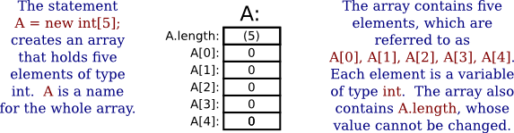
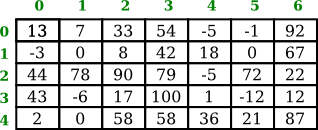

Arrays
In previous sections of this chapter,we have already covered all of Java's control structures. But before moving on to the next chapter, we will take preliminary looks at two additional topics that are at least somewhat related to control structures.
This section is an introduction to arrays. Arrays are a basic and very commonly used data structure, and array processing is often an exercise in using control structures. The next section will introduce computer graphics and will allow you to apply what you know about control structures in another context.
Creating and Using Arrays
A data structure consists of a number of data items chunked together so that they can be treated as a unit. An array is a data structure in which the items are arranged as a numbered sequence, so that each individual item can be referred to by its position number. In Java—but not in some other programming languages—all the items must be of the same type, and the numbering always starts at zero. You will need to learn several new terms to talk about arrays: The number of items in an array is called the length of the array. The type of the individual items in an array is called the base type of the array. And the position number of an item in an array is called the index of that item.
Suppose that you want to write a program that will process the names of, say, one thousand people. You will need a way to deal with all that data. Before you knew about arrays, you might have thought that the program would need a thousand variables to hold the thousand names, and if you wanted to print out all the names, you would need a thousand print statements. Clearly, that would be ridiculous! In reality, you can put all the names into an array. The array is represented by a single variable, but it holds the entire list of names. The length of the array would be 1000, since there are 1000 individual names. The base type of the array would be String since the items in the array are strings. The first name would be at index 0 in the array, the second name at index 1, and so on, up to the thousandth name at index 999.
The base type of an array can be any Java type, but for now, we will stick to arrays whose base type is String or one of the eight primitive types. If the base type of an array is int, it is referred to as an "array of ints." An array with base type String is referred to as an "array of Strings." However, an array is not, properly speaking, a list of integers or strings or other values. It is better thought of as a list of variables of type int, or a list of variables of type String, or of some other type. As always, there is some potential for confusion between the two uses of a variable: as a name for a memory location and as a name for the value stored in that memory location. Each position in an array acts as a variable. Each position can hold a value of a specified type (the base type of the array), just as a variable can hold a value. The value can be changed at any time, just as the value of a variable can be changed. The items in an array—really, the individual variables that make up the array—are more often referred to as the elements of the array.
As I mentioned above, when you use an array in a program, you can use a variable to refer to the array as a whole. But you often need to refer to the individual elements of the array. The name for an element of an array is based on the name for the array and the index number of the element. The syntax for referring to an element looks, for example, like this: namelist[7]. Here, namelist is the variable that names the array as a whole, and namelist[7] refers to the element at index 7 in that array. That is, to refer to an element of an array, you use the array name, followed by element index enclosed in square brackets. An element name of this form can be used like any other variable: You can assign a value to it, print it out, use it in an expression, and so on.
An array also contains a kind of variable representing its length. For example, you can refer to the length of the array namelist as namelist.length. However, you cannot assign a value to namelist.length, since the length of an array cannot be changed.
Before you can use a variable to refer to an array, that variable must be declared, and it must have a type. For an array of Strings, for example, the type for the array variable would be String[], and for an array of ints, it would be int[]. In general, an array type consists of the base type of the array followed by a pair of empty square brackets. Array types can be used to declare variables; for example,
String[] namelist;
int[] A;
double[] prices;
and variables declared in this way can refer to arrays. However, declaring a variable does not make the actual array. Like all variables, an array variable has to be assigned a value before it can be used. In this case, the value is an array. Arrays have to be created using a special syntax. (The syntax is related to the fact that arrays in Java are actually objects, but that doesn't need to concern us here.) Arrays are created with an operator named new. Here are some examples:
namelist = new String[1000];
A = new int[5];
prices = new double[100];The general syntax is
array-variable = new base-type[array-length];The length of the array can be given as either an integer or an integer-valued expression. For example, after the assignment statement "A = new int[5];", A is an array containing the five integer elements A[0], A[1], A[2], A[3], and A[4]. Also, A.length would have the value 5. It's useful to have a picture in mind:

When you create an array of int, each element of the array is automatically initialized to zero. Any array of numbers is filled with zeros when it is created. An array of boolean is filled with the value false. And an array of char is filled with the character that has Unicode code number zero. (For an array of String, the initial value is null, a special value used for objects that we won't encounter officially until Section 5.1.)
Arrays and For Loops
A lot of the real power of arrays comes from the fact that the index of an element can be given by an integer variable or even an integer-valued expression. For example, if list is an array and i is a variable of type int, then you can use list[i] and even list[2*i+1] as variable names. The meaning of list[i] depends on the value of i. This becomes especially useful when we want to process all the elements of an array, since that can be done with a for loop. For example, to print out all the items in an array, list, we can just write
int i; // the array index
for (i = 0; i < list.length; i++) {
System.out.println( list[i] );
}The first time through the loop, i is 0, and list[i] refers to list[0]. So, it is the value stored in the variable list[0] that is printed. The second time through the loop, i is 1, and the value stored in list[1] is printed. If the length of the list is 5, then the loop ends after printing the value of list[4], when i becomes equal to 5 and the continuation condition "i < list.length" is no longer true. This is a typical example of using a loop to process an array.
Let's look at a few more examples. Suppose that A is an array of double, and we want to find the average of all the elements of the array. We can use a for loop to add up the numbers, and then divide by the length of the array to get the average:
double total; // The sum of the numbers in the array.
double average; // The average of the numbers.
int i; // The array index.
total = 0;
for ( i = 0; i < A.length; i++ ) {
total = total + A[i]; // Add element number i to the total.
}
average = total / A.length; // A.length is the number of itemsAnother typical problem is to find the largest number in the array A. The strategy is to go through the array, keeping track of the largest number found so far. We'll store the largest number found so far in a variable called max. As we look through the array, whenever we find a number larger than the current value of max, we change the value of max to that larger value. After the whole array has been processed, max is the largest item in the array overall. The only question is, what should the original value of max be? One possibility is to start with max equal to A[0], and then to look through the rest of the array, starting from A[1], for larger items:
double max; // The largest number seen so far.
max = A[0]; // At first, the largest number seen is A[0].
int i;
for ( i = 1; i < A.length; i++ ) {
if (A[i] > max) {
max = A[i];
}
}
// at this point, max is the largest item in ASometimes, you only want to process some elements of the array. In that case, you can use an if statement inside the for loop to decide whether or not to process a given element. Let's look at the problem of averaging the elements of an array, but this time, suppose that we only want to average the non-zero elements. In this case, the number of items that we add up can be less than the length of the array, so we will need to keep a count of the number of items added to the sum:
double total; // The sum of the non-zero numbers in the array.
int count; // The number of non-zero numbers.
double average; // The average of the non-zero numbers.
int i;
total = 0;
count = 0;
for ( i = 0; i < A.length; i++ ) {
if ( A[i] != 0 ) { // Only process non-zero elements!
total = total + A[i]; // Add element to the total
count = count + 1; // and count it.
}
}
if (count == 0) {
System.out.println("There were no non-zero elements.");
}
else {
average = total / count; // Divide by number of items
System.out.printf("Average of %d elements is %1.5g%n",
count, average);
}Random Access
So far, my examples of array processing have used sequential access. That is, the elements of the array were processed one after the other in the sequence in which they occur in the array. But one of the big advantages of arrays is that they allow random access. That is, every element of the array is equally accessible at any given time.
As an example, let's look at a well-known problem called the birthday problem: Suppose that there are N people in a room. What's the chance that there are two people in the room who have the same birthday? (That is, they were born on the same day in the same month, but not necessarily in the same year.) Most people severely underestimate the probability. We will actually look at a different version of the question: Suppose you choose people at random and check their birthdays. How many people will you check before you find one who has the same birthday as someone you've already checked? Of course, the answer in a particular case depends on random factors, but we can simulate the experiment with a computer program and run the program several times to get an idea of how many people need to be checked on average.
To simulate the experiment, we need to keep track of each birthday that we find. There are 365 different possible birthdays. (We'll ignore leap years.) For each possible birthday, we need to keep track of whether or not we have already found a person who has that birthday. The answer to this question is a boolean value, true or false. To hold the data for all 365 possible birthdays, we can use an array of 365 boolean values:
boolean[] used;
used = new boolean[365];For this problem, the days of the year are numbered from 0 to 364. The value of used[i] is true if someone has been selected whose birthday is day number i. Initially, all the values in the array are false. (Remember that this is done automatically when the array is created.) When we select someone whose birthday is day number i, we first check whether used[i] is true. If it is true, then this is the second person with that birthday. We are done. On the other hand, if used[i] is false, we set used[i] to be true to record the fact that we've encountered someone with that birthday, and we go on to the next person. Here is a program that carries out the simulated experiment (of course, in the program, there are no simulated people, only simulated birthdays):
/**
* Simulate choosing people at random and checking the day of the year they
* were born on. If the birthday is the same as one that was seen previously,
* stop, and output the number of people who were checked.
*/
public class BirthdayProblem {
public static void main(String[] args) {
boolean[] used; // For recording the possible birthdays
// that have been seen so far. A value
// of true in used[i] means that a person
// whose birthday is the i-th day of the
// year has been found.
int count; // The number of people who have been checked.
used = new boolean[365]; // Initially, all entries are false.
count = 0;
while (true) {
// Select a birthday at random, from 0 to 364.
// If the birthday has already been used, quit.
// Otherwise, record the birthday as used.
int birthday; // The selected birthday.
birthday = (int)(Math.random()*365);
count++;
System.out.printf("Person %d has birthday number %d%n", count, birthday);
if ( used[birthday] ) {
// This day was found before; it's a duplicate. We are done.
break;
}
used[birthday] = true;
} // end while
System.out.println();
System.out.println("A duplicate birthday was found after "
+ count + " tries.");
}
} // end class BirthdayProblemYou should study the program to understand how it works and how it uses the array. Also, try it out! You will probably find that a duplicate birthday tends to occur sooner than you expect.
Partially Full Arrays
Consider an application where the number of items that we want to store in an array changes as the program runs. Since the size of the array can't be changed, a separate counter variable must be used to keep track of how many spaces in the array are in use. (Of course, every space in the array has to contain something; the question is, how many spaces contain useful or valid items?)
Consider, for example, a program that reads positive integers entered by the user and stores them for later processing. The program stops reading when the user inputs a number that is less than or equal to zero. The input numbers can be kept in an array, numbers, of type int[]. Let's say that no more than 100 numbers will be input. Then the size of the array can be fixed at 100. But the program must keep track of how many numbers have actually been read and stored in the array. For this, it can use an integer variable. Each time a number is stored in the array, we have to count it; that is, the value of the counter variable must be incremented by one. One question is, when we add a new item to the array, where do we put it? Well, if the number of items is count, then they would be stored in the array in positions number 0, 1, ..., (count-1). The next open spot would be position number count, so that's where we should put the new item.
As a rather silly example, let's write a program that will read the numbers input by the user and then print them in the reverse of the order in which they were entered. Assume that an input value equal to zero marks the end of the data. (This is, at least, a processing task that requires that the numbers be saved in an array. Note that many types of processing, such as finding the sum or average or maximum of the numbers, can be done without saving the individual numbers.)
import textio.TextIO;
public class ReverseInputNumbers {
public static void main(String[] args) {
int[] numbers; // An array for storing the input values.
int count; // The number of numbers saved in the array.
int num; // One of the numbers input by the user.
int i; // for-loop variable.
numbers = new int[100]; // Space for 100 ints.
count = 0; // No numbers have been saved yet.
System.out.println("Enter up to 100 positive integers; enter 0 to end.");
while (true) { // Get the numbers and put them in the array.
System.out.print("? ");
num = TextIO.getlnInt();
if (num <= 0) {
// Zero marks the end of input; we have all the numbers.
break;
}
numbers[count] = num; // Put num in position count.
count++; // Count the number
}
System.out.println("\nYour numbers in reverse order are:\n");
for ( i = count - 1; i >= 0; i-- ) {
System.out.println( numbers[i] );
}
} // end main();
} // end class ReverseInputNumbersIt is especially important to note how the variable count plays a dual role. It is the number of items that have been entered into the array. But it is also the index of the next available spot in the array.
When the time comes to print out the numbers in the array, the last occupied spot in the array is location count - 1, so the for loop prints out values starting from location count - 1 and going down to 0. This is also a nice example of processing the elements of an array in reverse order.
You might wonder what would happen in this program if the user tries to input more than 100 numbers. The result would be an error that would crash the program. When the user enters the 101-st number, the program tries to store that number in an array element number[100]. However, there is no such array element. There are only 100 items in the array, and the index of the last item is 99. The attempt to use number[100] generates an exception of type ArrayIndexOutOfBoundsException. Exceptions of this type are a common source of run-time errors in programs that use arrays.
Two-dimensional Arrays
The arrays that we have considered so far are "one-dimensional." This means that the array consists of a sequence of elements that can be thought of as being laid out along a line. It is also possible to have two-dimensional arrays, where the elements can be laid out in a rectangular grid. We consider them only briefly here, but will return to the topic in Section 7.6.
In a two-dimensional, or "2D," array, the elements can be arranged in rows and columns. Here, for example, is a 2D array of int that has five rows and seven columns:

This 5-by-7 grid contains a total of 35 elements. The rows in a 2D array are numbered 0, 1, 2, ..., up to the number of rows minus one. Similarly, the columns are numbered from zero up to the number of columns minus one. Each individual element in the array can be picked out by specifying its row number and its column number. (The illustration shown here is not what the array actually looks like in the computer's memory, but it does show the logical structure of the array.)
In Java, the syntax for two-dimensional arrays is similar to the syntax for one-dimensional arrays, except that an extra index is involved, since picking out an element requires both a row number and a column number. For example, if A is a 2D array of int, then A[3][2] would be the element in row 3, column 2. That would pick out the number 17 in the array shown above. The type for A would be given as int[][], with two pairs of empty brackets. To declare the array variable and create the array, you could say,
int[][] A;
A = new int[5][7];The second line creates a 2D array with 5 rows and 7 columns. Two-dimensional arrays are often processed using nested for loops. For example, the following code segment will print out the elements of A in neat columns:
int row, col; // loop-control-variables for accessing rows and columns in A
for ( row = 0; row < 5; row++ ) {
for ( col = 0; col < 7; col++ ) {
System.out.printf( "%7d", A[row][col] );
}
System.out.println();
}The base type of a 2D array can be anything, so you can have arrays of type double[][], String[][], and so on.
There are some natural uses for 2D arrays. For example, a 2D array can be used to store the contents of the board in a game such as chess or checkers. And an example in Subsection 4.7.3 uses a 2D array to hold the colors of a grid of colored squares. But sometimes two-dimensional arrays are used in problems in which the grid is not so visually obvious. Consider a company that owns 25 stores. Suppose that the company has data about the profit earned at each store for each month in the year 2022. If the stores are numbered from 0 to 24, and if the twelve months from January 2022 through December 2022 are numbered from 0 to 11, then the profit data could be stored in an array, profit, created as follows:
double[][] profit;
profit = new double[25][12];profit[3][2] would be the amount of profit earned at store number 3 in March, and more generally, profit[storeNum][monthNum] would be the amount of profit earned in store number storeNum in month number monthNum (where the numbering, remember, starts from zero).
Let's assume that the profit array has already been filled with data. This data can be processed in a lot of interesting ways. For example, the total profit for the company—for the whole year from all its stores—can be calculated by adding up all the entries in the array:
double totalProfit; // Company's total profit in 2022.
int store, month; // variables for looping through the stores and the months
totalProfit = 0;
for ( store = 0; store < 25; store++ ) {
for ( month = 0; month < 12; month++ )
totalProfit += profit[store][month];
}Sometimes it is necessary to process a single row or a single column of an array, not the entire array. For example, to compute the total profit earned by the company in December, that is, in month number 11, you could use the loop:
double decemberProfit;
int storeNum;
decemberProfit = 0.0;
for ( storeNum = 0; storeNum < 25; storeNum++ ) {
decemberProfit += profit[storeNum][11];
}Two-dimensional arrays are sometimes useful, but they are much less common than one-dimensional arrays. Java actually allows arrays of even higher dimension, but they are only rarely encountered in practice.